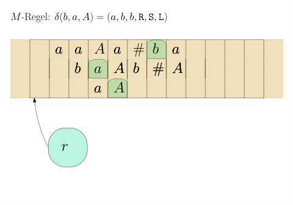
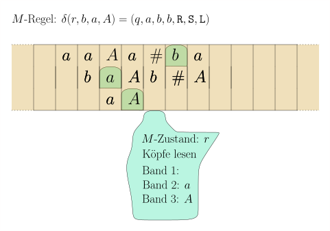
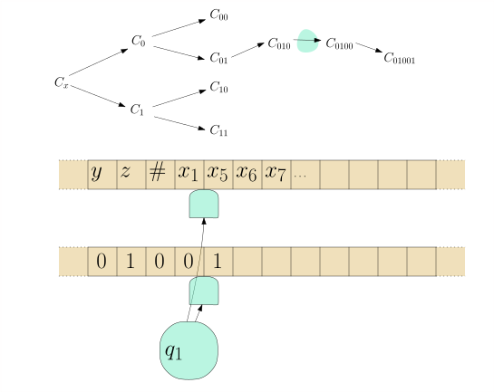

8.3 Variationen: Mehrband-Maschinen, nichtdeterministische Maschinen./wly/08/03-Turing-machine-variants.wly:3:5
Turingmaschinen mit mehreren Bändern./wly/08/03-Turing-machine-variants.wly:6:9
Im letzten Teilkapitel ist Ihnen bestimmt./wly/08/03-Turing-machine-variants.wly:8:5 aufgefallen, dass es auffallend lästig ist, selbst für./wly/08/03-Turing-machine-variants.wly:9:5 einfache Sprachen wie./wly/08/03-Turing-machine-variants.wly:10:5
$$
\begin{align*}
\{a^n b^n c^n \ | \ n \geq 0 \}
\end{align*}
$$
oder./wly/08/03-Turing-machine-variants.wly:16:5
$$
\begin{align*}
\{wcw
| \ w \in \{a,b\}^*\}
\end{align*}
$$
Turingmaschinen zu programmieren. Ein Grund dafür./wly/08/03-Turing-machine-variants.wly:23:5 ist, dass die Maschine nur an einer Position des./wly/08/03-Turing-machine-variants.wly:24:5 Bandes lesen und schreiben kann und man deswegen./wly/08/03-Turing-machine-variants.wly:25:5 ständig zwischen verschiedenen Stellen hin- und./wly/08/03-Turing-machine-variants.wly:26:5 herfahren muss. Es bietet sich daher an, an etwas./wly/08/03-Turing-machine-variants.wly:27:5 allgemeineres Modell einer Rechenmaschine zu./wly/08/03-Turing-machine-variants.wly:28:5 definieren, das dann auch leichter zu programmieren./wly/08/03-Turing-machine-variants.wly:29:5 ist. Dies ist die ./wly/08/03-Turing-machine-variants.wly:30:5Mehrband-Turingmaschine./wly/08/03-Turing-machine-variants.wly:30:24../wly/08/03-Turing-machine-variants.wly:30:48 Eine./wly/08/03-Turing-machine-variants.wly:30:48 Mehrband-Turingmaschine ist wie eine Turingmaschine,./wly/08/03-Turing-machine-variants.wly:31:5 nur dass sie statt einem ./wly/08/03-Turing-machine-variants.wly:32:5$k$ viele Bänder und somit./wly/08/03-Turing-machine-variants.wly:32:33 auch ./wly/08/03-Turing-machine-variants.wly:33:5$k$ viele Schreib-Lese-Köpfe hat. Die./wly/08/03-Turing-machine-variants.wly:33:13 Zustandsübergangsfunktion ./wly/08/03-Turing-machine-variants.wly:34:5$\delta$ hat somit auch die./wly/08/03-Turing-machine-variants.wly:34:39 Signatur./wly/08/03-Turing-machine-variants.wly:35:5
$$
\begin{align*}
\delta : Q \times \Gamma^k
\rightarrow Q \times \Gamma^k \times \lsr^k
\end{align*}
$$
./public/img/turing-machines/example-3-multitape/01.svg
 ./public/img/turing-machines/example-3-multitape/02.svg
./public/img/turing-machines/example-3-multitape/02.svg
./public/img/turing-machines/example-3-multitape/03.svg
 ./public/img/turing-machines/example-3-multitape/04.svg
./public/img/turing-machines/example-3-multitape/04.svg
./public/img/turing-machines/example-3-multitape/05.svg
Beispiel 8.3.1./wly/08/03-Turing-machine-variants.wly:50:6 ./wly/08/03-Turing-machine-variants.wly:50:23 Entwerfen wir nun eine Turingmaschine für die./wly/08/03-Turing-machine-variants.wly:51:9 Palindromsprache./wly/08/03-Turing-machine-variants.wly:52:9
$$
\begin{align*}
L := \{ w \in \{a,b\}^* \ | \ w = w^R \} \ ,
\end{align*}
$$
In ./wly/08/03-Turing-machine-variants.wly:58:9Beispiel 8.2.2./wly/ haben wir dafür./wly/08/03-Turing-machine-variants.wly:58:9 eine Einband-Turingmaschine geschrieben. Deren./wly/08/03-Turing-machine-variants.wly:59:9 Nachteil war, dass sie ständig zwischen dem linken und./wly/08/03-Turing-machine-variants.wly:60:9 rechten Rand hin-und-herlaufen musste. Bauen wir nun./wly/08/03-Turing-machine-variants.wly:61:9 eine Mehrband-Turingmaschine. Diese arbeitet in drei./wly/08/03-Turing-machine-variants.wly:62:9 einfachen und kurzen Phasen:./wly/08/03-Turing-machine-variants.wly:63:9
-
copy./wly/08/03-Turing-machine-variants.wly:67:18:./wly/08/03-Turing-machine-variants.wly:67:23 kopiert das ./wly/08/03-Turing-machine-variants.wly:67:23$w$ auf das zweite Band./wly/08/03-Turing-machine-variants.wly:67:40 -
rewind./wly/08/03-Turing-machine-variants.wly:70:18:./wly/08/03-Turing-machine-variants.wly:70:25 bewegt den Kopf des ersten Bandes zurück./wly/08/03-Turing-machine-variants.wly:70:25 zum Anfang./wly/08/03-Turing-machine-variants.wly:71:17 -
compare./wly/08/03-Turing-machine-variants.wly:74:18:./wly/08/03-Turing-machine-variants.wly:74:26 schaut, ob erstes und zweites Band den./wly/08/03-Turing-machine-variants.wly:74:26 gleichen Inhalt haben../wly/08/03-Turing-machine-variants.wly:75:17
Den "Quelltext" für./wly/08/03-Turing-machine-variants.wly:77:9 ./wly/08/03-Turing-machine-variants.wly:78:9turingmachinesimulator.com./wly/08/03-Turing-machine-variants.wly:78:10 ./wly/08/03-Turing-machine-variants.wly:78:73 finden Sie in./wly/08/03-Turing-machine-variants.wly:79:9 ./wly/08/03-Turing-machine-variants.wly:80:9palindrome-multiple-tapes.txt./wly/08/03-Turing-machine-variants.wly:80:10../wly/08/03-Turing-machine-variants.wly:80:96
Übungsaufgabe 8.3.1./wly/08/03-Turing-machine-variants.wly:82:6
./wly/08/03-Turing-machine-variants.wly:82:26
Schreiben Sie eine Mehrband-Turingmaschine, die./wly/08/03-Turing-machine-variants.wly:83:9
Binärzahlen addiert. Wenn also beispielsweise./wly/08/03-Turing-machine-variants.wly:84:9
./wly/08/03-Turing-machine-variants.wly:85:91010+110./wly/08/03-Turing-machine-variants.wly:85:10
auf dem ersten Band (Eingabeband) steht,./wly/08/03-Turing-machine-variants.wly:85:19
dann soll nach Abschluss der Berechnung das Ergebnis./wly/08/03-Turing-machine-variants.wly:86:9
auf dem Ausgabeband stehen, also
./wly/08/03-Turing-machine-variants.wly:87:910000./wly/08/03-Turing-machine-variants.wly:87:43../wly/08/03-Turing-machine-variants.wly:87:49
./wly/08/03-Turing-machine-variants.wly:87:49Tip../wly/08/03-Turing-machine-variants.wly:87:52
./wly/08/03-Turing-machine-variants.wly:87:57
Verwenden Sie drei Bänder. Sei der Bandinhalt
./wly/08/03-Turing-machine-variants.wly:88:9$x+y$../wly/08/03-Turing-machine-variants.wly:88:60
./wly/08/03-Turing-machine-variants.wly:88:60
In einer ersten Phase kopieren Sie
./wly/08/03-Turing-machine-variants.wly:89:9$x$
auf das zweite./wly/08/03-Turing-machine-variants.wly:89:47
Band. In der nächsten Phase gehen Sie ans Ende von./wly/08/03-Turing-machine-variants.wly:90:9
./wly/08/03-Turing-machine-variants.wly:91:9$y$../wly/08/03-Turing-machine-variants.wly:91:12
Dann addieren Sie nach den Regeln der./wly/08/03-Turing-machine-variants.wly:91:12
Binäraddition. Ob "1 gemerkt" gilt oder nicht, können./wly/08/03-Turing-machine-variants.wly:92:9
Sie in Ihrem internen Zustand speichern. Eine Regel./wly/08/03-Turing-machine-variants.wly:93:9
wäre also zum Beispiel:./wly/08/03-Turing-machine-variants.wly:94:9
carry1, 0, 0, _./wly/08/03-Turing-machine-variants.wly:97:9 carry0, 0, 0, 1,<,<,<./wly/08/03-Turing-machine-variants.wly:98:9 carry1, 0, 1, _./wly/08/03-Turing-machine-variants.wly:99:9 carry1, 0, 1, 0,<,<,<./wly/08/03-Turing-machine-variants.wly:100:9
Ein lästiges Detail ist, dass
./wly/08/03-Turing-machine-variants.wly:103:9$y$
kürzer sein könnte./wly/08/03-Turing-machine-variants.wly:103:42
als
./wly/08/03-Turing-machine-variants.wly:104:9$x$
und Sie daher in das
./wly/08/03-Turing-machine-variants.wly:104:16+./wly/08/03-Turing-machine-variants.wly:104:39
reinlaufen könnten;./wly/08/03-Turing-machine-variants.wly:104:41
wenn
./wly/08/03-Turing-machine-variants.wly:105:9$x$
kürzer ist als
./wly/08/03-Turing-machine-variants.wly:105:17$y$,./wly/08/03-Turing-machine-variants.wly:105:36
dann könnten Sie auf dem./wly/08/03-Turing-machine-variants.wly:105:36
zweiten Band in ein
./wly/08/03-Turing-machine-variants.wly:106:9$\square$
reinlaufen. Wie ist./wly/08/03-Turing-machine-variants.wly:106:38
dieser Fall zu behandeln?./wly/08/03-Turing-machine-variants.wly:107:9
Berechnete Sprache, berechnete Funktion../wly/08/03-Turing-machine-variants.wly:109:6 Die./wly/08/03-Turing-machine-variants.wly:109:47 Begriffe des Akzpetierens und Ablehnens definieren wir./wly/08/03-Turing-machine-variants.wly:110:5 genau wie für die Einband-Turingmaschinen. Eine./wly/08/03-Turing-machine-variants.wly:111:5 formale Definition der Konfiguration ersparen wir uns./wly/08/03-Turing-machine-variants.wly:112:5 jedoch. Wenn unsere Mehrband-Turingmaschine nicht nur./wly/08/03-Turing-machine-variants.wly:113:5 akzeptieren / ablehnen, sondern etwas ./wly/08/03-Turing-machine-variants.wly:114:5berechnen./wly/08/03-Turing-machine-variants.wly:114:44 ./wly/08/03-Turing-machine-variants.wly:114:54 soll, also eine Funktion./wly/08/03-Turing-machine-variants.wly:115:5
$$
\begin{align*}
f :
\Sigma_1 \rightarrow \Sigma_2 \ ,
\end{align*}
$$
dann bauen wir sie per Konvention so, dass sie ein./wly/08/03-Turing-machine-variants.wly:122:5 designiertes Ausgabeband hat, auf dem nach Abschluss./wly/08/03-Turing-machine-variants.wly:123:5 der Berechnung das Ausgabewort ./wly/08/03-Turing-machine-variants.wly:124:5$f(x)$ steht../wly/08/03-Turing-machine-variants.wly:124:42
Einband-Maschinen können Mehrband-Maschinen./wly/08/03-Turing-machine-variants.wly:127:9 simulieren./wly/08/03-Turing-machine-variants.wly:128:9
Es stellt sich heraus, dass mehrere Bänder zwar ein./wly/08/03-Turing-machine-variants.wly:130:5 praktisches Feature sind, aber nicht wirklich mehr./wly/08/03-Turing-machine-variants.wly:131:5 Ausdruckskraft verlangen; was eine./wly/08/03-Turing-machine-variants.wly:132:5 Mehrband-Turingmaschine schafft, schafft eine./wly/08/03-Turing-machine-variants.wly:133:5 Einband-Turingmaschine auch../wly/08/03-Turing-machine-variants.wly:134:5
Theorem 8.3.2 (Einband-Turingmaschine simuliert./wly/08/03-Turing-machine-variants.wly:136:6 Mehrband-Turingmaschine)./wly/08/03-Turing-machine-variants.wly:138:9../wly/08/03-Turing-machine-variants.wly:138:34 Sei ./wly/08/03-Turing-machine-variants.wly:138:34$M$ eine./wly/08/03-Turing-machine-variants.wly:138:43 Turingmaschine mit ./wly/08/03-Turing-machine-variants.wly:139:9$k$ Bändern, wovon eines ein./wly/08/03-Turing-machine-variants.wly:139:31 designiertes Ausgabeband ist. Dann gibt es eine./wly/08/03-Turing-machine-variants.wly:140:9 Einband-Turingmaschine ./wly/08/03-Turing-machine-variants.wly:141:9$M'$ mit folgenden./wly/08/03-Turing-machine-variants.wly:141:36 Eigenschaften:./wly/08/03-Turing-machine-variants.wly:142:9
-
$M'(x)$ akzeptiert/lehnt ab/terminiert nicht genau./wly/08/03-Turing-machine-variants.wly:146:24 dann, wenn ./wly/08/03-Turing-machine-variants.wly:147:17$M(x)$ akzeptiert/ablehnt/nicht./wly/08/03-Turing-machine-variants.wly:147:34 terminiert../wly/08/03-Turing-machine-variants.wly:148:17
-
Wenn ./wly/08/03-Turing-machine-variants.wly:151:17$M(x)$ akzeptiert und ./wly/08/03-Turing-machine-variants.wly:151:28$y$ der Bandinhalt des./wly/08/03-Turing-machine-variants.wly:151:47 Ausgabebandes ist, dann akzeptiert ./wly/08/03-Turing-machine-variants.wly:152:17$M'(x)$ auch, und./wly/08/03-Turing-machine-variants.wly:152:59 der Bandinhalt (des einzigen Bandes, es gibt ja nur./wly/08/03-Turing-machine-variants.wly:153:17 eins) ist ./wly/08/03-Turing-machine-variants.wly:154:17$y$../wly/08/03-Turing-machine-variants.wly:154:30
In anderen Worten: ./wly/08/03-Turing-machine-variants.wly:156:9$M'$ simuliert ./wly/08/03-Turing-machine-variants.wly:156:32$M$../wly/08/03-Turing-machine-variants.wly:156:46
Beweis../wly/ ./wly/ Der erste Trick ist, dass wir die ./wly/08/03-Turing-machine-variants.wly:159:9$k$ Bänder von ./wly/08/03-Turing-machine-variants.wly:159:46$M$ ./wly/08/03-Turing-machine-variants.wly:159:61 "zusammenkleben" in ein neues Band, in welcher jede./wly/08/03-Turing-machine-variants.wly:160:9 Zelle ./wly/08/03-Turing-machine-variants.wly:161:9$k$ Symbole enthalten kann:./wly/08/03-Turing-machine-variants.wly:161:18
 ./public/img/turing-machines/example-3-multitape/multitape-to-onetape.svg
./public/img/turing-machines/example-3-multitape/multitape-to-onetape.svg
Das Problem sind nun die Köpfe. Wenn wir diese Idee./wly/08/03-Turing-machine-variants.wly:168:9 naiv umsetzen würden, hätte unsere Maschine ./wly/08/03-Turing-machine-variants.wly:169:9$M'$ zwar./wly/08/03-Turing-machine-variants.wly:169:57 ein Band, dafür drei Köpfe auf diesem:./wly/08/03-Turing-machine-variants.wly:170:9
 ./public/img/turing-machines/example-3-multitape/multitape-to-onetape-three-heads.svg
./public/img/turing-machines/example-3-multitape/multitape-to-onetape-three-heads.svg
Wir lösen dies, indem wir die Kopfpositionen in das./wly/08/03-Turing-machine-variants.wly:177:9 Band selbst reinschreiben:./wly/08/03-Turing-machine-variants.wly:178:9
Das neue Bandalphabet ist also nicht ./wly/08/03-Turing-machine-variants.wly:185:9$\Gamma^k$ ./wly/08/03-Turing-machine-variants.wly:185:56 sondern./wly/08/03-Turing-machine-variants.wly:186:9 ./wly/08/03-Turing-machine-variants.wly:187:9$(\Gamma \times \{\texttt{head}, \texttt{nohead}\} )^k$../wly/08/03-Turing-machine-variants.wly:188:13 ./wly/08/03-Turing-machine-variants.wly:188:13 Wo steht nun aber denn der Kopf von ./wly/08/03-Turing-machine-variants.wly:189:9$M'$?./wly/08/03-Turing-machine-variants.wly:189:49 Jetzt kommt./wly/08/03-Turing-machine-variants.wly:189:49 der schwierige Teil: um ./wly/08/03-Turing-machine-variants.wly:190:9einen./wly/08/03-Turing-machine-variants.wly:190:34 Schritt von ./wly/08/03-Turing-machine-variants.wly:190:40$M$ zu./wly/08/03-Turing-machine-variants.wly:190:56 simulieren, muss ./wly/08/03-Turing-machine-variants.wly:191:9$M'$ von ganz links nach ganz rechts./wly/08/03-Turing-machine-variants.wly:191:30 laufen und alle Informationen über die ./wly/08/03-Turing-machine-variants.wly:192:9$k$ ./wly/08/03-Turing-machine-variants.wly:192:51$M$-Köpfe./wly/08/03-Turing-machine-variants.wly:192:55 ./wly/08/03-Turing-machine-variants.wly:192:55 sammeln. Dann von rechts nach links gehen und die./wly/08/03-Turing-machine-variants.wly:193:9 ausführen../wly/08/03-Turing-machine-variants.wly:194:9
./public/img/turing-machines/one-simulates-multi/01-01.svg
 ./public/img/turing-machines/one-simulates-multi/02-01.svg
./public/img/turing-machines/one-simulates-multi/02-01.svg
 ./public/img/turing-machines/one-simulates-multi/02-02.svg
./public/img/turing-machines/one-simulates-multi/02-02.svg
 ./public/img/turing-machines/one-simulates-multi/02-03.svg
./public/img/turing-machines/one-simulates-multi/02-03.svg
 ./public/img/turing-machines/one-simulates-multi/02-04.svg
./public/img/turing-machines/one-simulates-multi/02-04.svg
 ./public/img/turing-machines/one-simulates-multi/02-05.svg
./public/img/turing-machines/one-simulates-multi/02-05.svg
./public/img/turing-machines/one-simulates-multi/02-06.svg
 ./public/img/turing-machines/one-simulates-multi/02-07.svg
./public/img/turing-machines/one-simulates-multi/02-07.svg
 ./public/img/turing-machines/one-simulates-multi/02-08.svg
./public/img/turing-machines/one-simulates-multi/02-08.svg
 ./public/img/turing-machines/one-simulates-multi/03-01.svg
./public/img/turing-machines/one-simulates-multi/03-01.svg
 ./public/img/turing-machines/one-simulates-multi/03-02.svg
./public/img/turing-machines/one-simulates-multi/03-02.svg
 ./public/img/turing-machines/one-simulates-multi/04-01.svg
./public/img/turing-machines/one-simulates-multi/04-01.svg
 ./public/img/turing-machines/one-simulates-multi/04-02.svg
./public/img/turing-machines/one-simulates-multi/04-02.svg
 ./public/img/turing-machines/one-simulates-multi/04-03.svg
./public/img/turing-machines/one-simulates-multi/04-03.svg
 ./public/img/turing-machines/one-simulates-multi/04-04.svg
./public/img/turing-machines/one-simulates-multi/04-04.svg
 ./public/img/turing-machines/one-simulates-multi/05-01.svg
./public/img/turing-machines/one-simulates-multi/05-01.svg
 ./public/img/turing-machines/one-simulates-multi/05-02.svg
./public/img/turing-machines/one-simulates-multi/05-02.svg
 ./public/img/turing-machines/one-simulates-multi/06-01.svg
./public/img/turing-machines/one-simulates-multi/06-01.svg
 ./public/img/turing-machines/one-simulates-multi/07-01.svg
./public/img/turing-machines/one-simulates-multi/07-01.svg
 ./public/img/turing-machines/one-simulates-multi/08-01.svg
./public/img/turing-machines/one-simulates-multi/08-01.svg
Wir müssen also die Zustandsmenge deutlich erweitern;./wly/08/03-Turing-machine-variants.wly:219:9
so muss sie speichern können, ob wir ein Symbol./wly/08/03-Turing-machine-variants.wly:220:9
bereits gelesen haben; ob wir ein Symbol bereits./wly/08/03-Turing-machine-variants.wly:221:9
geschrieben haben und ob wir den Kopf bereits./wly/08/03-Turing-machine-variants.wly:222:9
entsprechend verschoben haben. Für eine./wly/08/03-Turing-machine-variants.wly:223:9
Rechtsverschiebung müssen wir uns zusätzlich noch./wly/08/03-Turing-machine-variants.wly:224:9
merken, dass wir sie gerade durchführen und für./wly/08/03-Turing-machine-variants.wly:225:9
welches Band. All dies ist viel, aber immer noch./wly/08/03-Turing-machine-variants.wly:226:9
endlich. Wir können alles in einer endlichen./wly/08/03-Turing-machine-variants.wly:227:9
Zustandsmenge
./wly/08/03-Turing-machine-variants.wly:228:9$Q'$
speichern. Wenn der
./wly/08/03-Turing-machine-variants.wly:228:27$M$
-Zustand./wly/08/03-Turing-machine-variants.wly:228:51
(der natürlich auch im
./wly/08/03-Turing-machine-variants.wly:229:9$M'$-Zustand./wly/08/03-Turing-machine-variants.wly:229:36
gespeichert./wly/08/03-Turing-machine-variants.wly:229:36
./wly/08/03-Turing-machine-variants.wly:230:9ist),./wly/08/03-Turing-machine-variants.wly:230:9accept./wly/08/03-Turing-machine-variants.wly:230:15erreicht./wly/08/03-Turing-machine-variants.wly:230:22
hat, dann macht
./wly/08/03-Turing-machine-variants.wly:230:22$M'$
noch eine./wly/08/03-Turing-machine-variants.wly:230:51
Aufräumphase, in welcher sie alle Symbole, die nicht./wly/08/03-Turing-machine-variants.wly:231:9
zum Ausgabeband gehören, durch
./wly/08/03-Turing-machine-variants.wly:232:9$\square$
ersetzt../wly/08/03-Turing-machine-variants.wly:232:49
Dann wechselt sie in ihren eigenen akzeptierenden./wly/08/03-Turing-machine-variants.wly:233:9
Zustand
./wly/08/03-Turing-machine-variants.wly:234:9accept'./wly/08/03-Turing-machine-variants.wly:234:18../wly/08/03-Turing-machine-variants.wly:234:26A./wly/\(\square\)./wly/
Einfügen versus Überschreiben./wly/08/03-Turing-machine-variants.wly:238:9
Folgende Aufgabe ist auf einer Einband-Turingmaschine./wly/08/03-Turing-machine-variants.wly:240:5 sehr leicht: gegeben ein Eingabewort./wly/08/03-Turing-machine-variants.wly:241:5 ./wly/08/03-Turing-machine-variants.wly:242:5$w \in \{a,b\}^*$,./wly/08/03-Turing-machine-variants.wly:242:22 ersetze jedes ./wly/08/03-Turing-machine-variants.wly:242:22$b$ durch ein ./wly/08/03-Turing-machine-variants.wly:242:41$c$../wly/08/03-Turing-machine-variants.wly:242:55 ./wly/08/03-Turing-machine-variants.wly:242:55 In der Syntax von./wly/08/03-Turing-machine-variants.wly:243:5 ./wly/08/03-Turing-machine-variants.wly:244:5turingmachinesimulator.com./wly/08/03-Turing-machine-variants.wly:244:6:./wly/08/03-Turing-machine-variants.wly:244:69
name: replace_b_by_c./wly/08/03-Turing-machine-variants.wly:247:5 ./wly/init: init./wly/08/03-Turing-machine-variants.wly:248:5 ./wly/accept: accept./wly/08/03-Turing-machine-variants.wly:249:5 ./wly/init, a./wly/08/03-Turing-machine-variants.wly:250:5 ./wly/init, a, >./wly/08/03-Turing-machine-variants.wly:251:5 ./wly/init, b./wly/08/03-Turing-machine-variants.wly:252:5 ./wly/init, c, >./wly/08/03-Turing-machine-variants.wly:253:5 ./wly/init, _./wly/08/03-Turing-machine-variants.wly:254:5 ./wly/accept, _, >./wly/08/03-Turing-machine-variants.wly:255:5
Ungleich schwieriger ist die Aufgabe, jedes ./wly/08/03-Turing-machine-variants.wly:258:5$b$ durch./wly/08/03-Turing-machine-variants.wly:258:52 ein ./wly/08/03-Turing-machine-variants.wly:259:5$bc$ zu ersetzen, weil wir hier etwas ./wly/08/03-Turing-machine-variants.wly:259:13einfügen./wly/08/03-Turing-machine-variants.wly:259:48 ./wly/08/03-Turing-machine-variants.wly:259:57 wollen. Auf einer Einband-Turingmaschine müssen wir./wly/08/03-Turing-machine-variants.wly:260:5 für jedes ./wly/08/03-Turing-machine-variants.wly:261:5$b$ alles, was rechts davon kommt, um eine./wly/08/03-Turing-machine-variants.wly:261:18 Zelle nach rechts verschieben. Meinen Quelltext finden./wly/08/03-Turing-machine-variants.wly:262:5 sie in./wly/08/03-Turing-machine-variants.wly:263:5 ./wly/08/03-Turing-machine-variants.wly:264:5replace-b-by-bc.txt./wly/08/03-Turing-machine-variants.wly:264:6../wly/08/03-Turing-machine-variants.wly:264:72 Können wir unserer Turingmaschine die Funktionalität./wly/08/03-Turing-machine-variants.wly:265:5 geben, eine Zelle ./wly/08/03-Turing-machine-variants.wly:266:5einzufügen./wly/08/03-Turing-machine-variants.wly:266:24 und alles von Kopf bis./wly/08/03-Turing-machine-variants.wly:266:35 zum linken Ende um eins nach links zu verschieben bzw../wly/08/03-Turing-machine-variants.wly:267:5 das analoge, aber nach rechts? Wir sind freie./wly/08/03-Turing-machine-variants.wly:268:5 Menschen, wir können definieren, was wir wollen,./wly/08/03-Turing-machine-variants.wly:269:5 müssen uns aber zwei Fragen stellen:./wly/08/03-Turing-machine-variants.wly:270:5
-
Ist das immer noch ein plausibles Modell einer./wly/08/03-Turing-machine-variants.wly:274:13 Rechenmaschine? Ist also unser neue Funktionalität./wly/08/03-Turing-machine-variants.wly:275:13 physikalisch realisierbar?./wly/08/03-Turing-machine-variants.wly:276:13
-
Verleiht es wirklich neue Funktionalität, oder ist es./wly/08/03-Turing-machine-variants.wly:279:13 nur Syntaxzucker?./wly/08/03-Turing-machine-variants.wly:280:13
In diesem Fall ahnen Sie es wohl bereits: es ist nur./wly/08/03-Turing-machine-variants.wly:282:5 Syntaxzucker. Die Funktionalität des./wly/08/03-Turing-machine-variants.wly:283:5 ./wly/08/03-Turing-machine-variants.wly:284:5Einfügens/Verschiebens./wly/08/03-Turing-machine-variants.wly:284:6 können wir leicht mit zwei./wly/08/03-Turing-machine-variants.wly:284:29 Bändern simulieren. Wir halten uns einfach an die./wly/08/03-Turing-machine-variants.wly:285:5 Konvention, dass auf Band 1 der Kopf immer auf dem./wly/08/03-Turing-machine-variants.wly:286:5 linkesten Zeichen steht und auf Band 2 der Kopf./wly/08/03-Turing-machine-variants.wly:287:5 jenseits des rechtesten../wly/08/03-Turing-machine-variants.wly:288:5
$$
\begin{align*}
\delta(q,x) = (r,y,\texttt{R})
\end{align*}
$$
wird dann./wly/08/03-Turing-machine-variants.wly:294:5
q, x, _./wly/08/03-Turing-machine-variants.wly:297:5 r, _, x, >, >./wly/08/03-Turing-machine-variants.wly:298:5
Eine Linksbewegung ist etwas schwieriger zu./wly/08/03-Turing-machine-variants.wly:301:5 implementieren. Aus ./wly/08/03-Turing-machine-variants.wly:302:5$\delta(q,x) = (r,y,\texttt{L})$ ./wly/08/03-Turing-machine-variants.wly:302:57 wird./wly/08/03-Turing-machine-variants.wly:303:5
q, x, _./wly/08/03-Turing-machine-variants.wly:306:5 r', x, _, -, -./wly/08/03-Turing-machine-variants.wly:307:5 r', _, c./wly/08/03-Turing-machine-variants.wly:308:5 r, c, _ ./wly/08/03-Turing-machine-variants.wly:309:5// für jedes Zeichen c./wly/08/03-Turing-machine-variants.wly:309:18
Nehmen Sie die Beispielmaschine./wly/08/03-Turing-machine-variants.wly:312:5 ./wly/08/03-Turing-machine-variants.wly:313:5go-left-go-right.txt./wly/08/03-Turing-machine-variants.wly:313:6,./wly/08/03-Turing-machine-variants.wly:313:74 geben Sie sie auf./wly/08/03-Turing-machine-variants.wly:314:5 ./wly/08/03-Turing-machine-variants.wly:315:5turingmachinesimulator.com./wly/08/03-Turing-machine-variants.wly:315:6 ./wly/08/03-Turing-machine-variants.wly:315:69 ein und starten Sie sie mit dem Eingabewort ./wly/08/03-Turing-machine-variants.wly:316:5$xxx$../wly/08/03-Turing-machine-variants.wly:316:54 ./wly/08/03-Turing-machine-variants.wly:316:54 Ein neues Zeichen links vom Kopf einfügen ist nun./wly/08/03-Turing-machine-variants.wly:317:5 einfach: aus./wly/08/03-Turing-machine-variants.wly:318:5
$$
\begin{align*}
\delta(q,x) = \textnormal{Zustand $r$, schreibe $y$ und
füge $z$ links vom Kopf ein}
\end{align*}
$$
wird./wly/08/03-Turing-machine-variants.wly:325:5
q, x, _./wly/08/03-Turing-machine-variants.wly:328:5 r'', _, z, >, >./wly/08/03-Turing-machine-variants.wly:329:5 r'', c, _./wly/08/03-Turing-machine-variants.wly:330:5 r, c, y, -, > ./wly/08/03-Turing-machine-variants.wly:331:5// für jedes Zeichen c./wly/08/03-Turing-machine-variants.wly:331:24
Sie können sich meine Implementierung in./wly/08/03-Turing-machine-variants.wly:334:5
./wly/08/03-Turing-machine-variants.wly:335:5insert-z-before-y.txt./wly/08/03-Turing-machine-variants.wly:335:6
./wly/08/03-Turing-machine-variants.wly:335:76
ansehen. Geben Sie beispielsweise
./wly/08/03-Turing-machine-variants.wly:336:5xxyxyyxx./wly/08/03-Turing-machine-variants.wly:336:40
als./wly/08/03-Turing-machine-variants.wly:336:49
Eingabewort ein. Wir können von nun an also so tun,./wly/08/03-Turing-machine-variants.wly:337:5
als hätten unsere Turingmaschinen die Möglichkeit,./wly/08/03-Turing-machine-variants.wly:338:5
zusätzliche Zellen einzufügen. In einer konkreten./wly/08/03-Turing-machine-variants.wly:339:5
Implementierung müssten wir dafür allerdings jedes./wly/08/03-Turing-machine-variants.wly:340:5
Band durch zwei Bänder ersetzen. Alternativ können Sie./wly/08/03-Turing-machine-variants.wly:341:5
sich eine Turingmaschine vorstellen, die statt
./wly/08/03-Turing-machine-variants.wly:342:5$k$
./wly/08/03-Turing-machine-variants.wly:342:55
Bändern einfach
./wly/08/03-Turing-machine-variants.wly:343:5$2k$
Stapel hat../wly/08/03-Turing-machine-variants.wly:343:25
Die Dictionary-Maschine./wly/08/03-Turing-machine-variants.wly:346:9
Ein fundamentale Datenstruktur beim Programmieren./wly/08/03-Turing-machine-variants.wly:348:5 sind ./wly/08/03-Turing-machine-variants.wly:349:5Dictionaries./wly/08/03-Turing-machine-variants.wly:349:11,./wly/08/03-Turing-machine-variants.wly:349:24 die Key-Value-Paare speichern:./wly/08/03-Turing-machine-variants.wly:349:24
user@home:~$./wly/08/03-Turing-machine-variants.wly:352:5 python -i./wly/08/03-Turing-machine-variants.wly:352:17./wly/ ./wly/>>>./wly/08/03-Turing-machine-variants.wly:353:5 dict = {"karl" : 42, "eva" : 35, "werner" : 20}./wly/08/03-Turing-machine-variants.wly:353:8./wly/ ./wly/>>>./wly/08/03-Turing-machine-variants.wly:354:5 dict["eva"]./wly/08/03-Turing-machine-variants.wly:354:8./wly/ ./wly/35./wly/08/03-Turing-machine-variants.wly:355:5./wly/ ./wly/>>>./wly/08/03-Turing-machine-variants.wly:356:5
Im Zweifelsfall sind diese als Hashmaps oder./wly/08/03-Turing-machine-variants.wly:359:5 Rot-Schwarz-Bäume oder B-Bäume implementiert. Hier./wly/08/03-Turing-machine-variants.wly:360:5 interessiert uns nicht so sehr die Laufzeit, sondern./wly/08/03-Turing-machine-variants.wly:361:5 einfach die Funktionalität. Können wir für./wly/08/03-Turing-machine-variants.wly:362:5 Dictionaries eine Turingmaschine implementieren?./wly/08/03-Turing-machine-variants.wly:363:5
Übungsaufgabe 8.3.2./wly/08/03-Turing-machine-variants.wly:365:6 ./wly/08/03-Turing-machine-variants.wly:365:26 Schreiben Sie auf./wly/08/03-Turing-machine-variants.wly:366:9 ./wly/08/03-Turing-machine-variants.wly:367:9turingmachinesimulator.com./wly/08/03-Turing-machine-variants.wly:367:10 ./wly/08/03-Turing-machine-variants.wly:367:73 eine Mehrband-Turingmaschine, die Inputs der Form./wly/08/03-Turing-machine-variants.wly:368:9
$$
\begin{align*}
k [ k_1 : v_1; k_2 : v_2; \dots ; k_n : v_n ]
\end{align*}
$$
entgegennimmt, für./wly/08/03-Turing-machine-variants.wly:374:9 ./wly/08/03-Turing-machine-variants.wly:375:9$k, k_1, \dots, k_n, v_1, \dots, v_n \in \{0,1\}^n$,./wly/08/03-Turing-machine-variants.wly:375:60 ./wly/08/03-Turing-machine-variants.wly:375:60 also./wly/08/03-Turing-machine-variants.wly:376:9 ./wly/08/03-Turing-machine-variants.wly:377:9$\Sigma = \{0,1, \texttt{:}, \texttt{;}, \texttt{[}, \texttt{]}\}$ ./wly/08/03-Turing-machine-variants.wly:378:22 und akzeptiert, wenn es ein ./wly/08/03-Turing-machine-variants.wly:379:9$i$ gibt mit ./wly/08/03-Turing-machine-variants.wly:379:40$k = k_i$ ./wly/08/03-Turing-machine-variants.wly:379:59 und in diesem Falle ./wly/08/03-Turing-machine-variants.wly:380:9$v_i$ auf das Ausgabeband./wly/08/03-Turing-machine-variants.wly:380:34 schreibt. ./wly/08/03-Turing-machine-variants.wly:381:9Tip:./wly/08/03-Turing-machine-variants.wly:381:20 Kopieren Sie erst einmal den./wly/08/03-Turing-machine-variants.wly:381:25 gesuchten Schlüssel ./wly/08/03-Turing-machine-variants.wly:382:9$k$ auf das zweite Band. Dann./wly/08/03-Turing-machine-variants.wly:382:32 können Sie bequem den Schlüssel ./wly/08/03-Turing-machine-variants.wly:383:9$k_i$ auf dem ersten./wly/08/03-Turing-machine-variants.wly:383:46 Band mit dem auf dem zweiten Band vergleichen. Wenn./wly/08/03-Turing-machine-variants.wly:384:9 Sie es sich einfach machen wollen, nehmen Sie einfach./wly/08/03-Turing-machine-variants.wly:385:9 mal an, dass alle Schlüssel gleiche Länge haben. Das./wly/08/03-Turing-machine-variants.wly:386:9 erspart Ihnen gefühlt 20 Zeilen im Programmcode der./wly/08/03-Turing-machine-variants.wly:387:9 Turingmaschine../wly/08/03-Turing-machine-variants.wly:388:9
Nichtdeterministische Turingmaschinen./wly/08/03-Turing-machine-variants.wly:391:9
Bereits im Kapitel über reguläre Sprachen haben wir./wly/08/03-Turing-machine-variants.wly:393:5 gesehen, dass Nichtdeterminismus hilfreich ist, wenn./wly/08/03-Turing-machine-variants.wly:394:5 wir Dinge beschreiben wollen, auch wenn es kein./wly/08/03-Turing-machine-variants.wly:395:5 realistisches Modell für Rechenmaschinen darstellt../wly/08/03-Turing-machine-variants.wly:396:5 Die Sprache aller Wörter über ./wly/08/03-Turing-machine-variants.wly:397:5$\{a,b\}$ , die das./wly/08/03-Turing-machine-variants.wly:397:44 Teilwort ./wly/08/03-Turing-machine-variants.wly:398:5$aababaa$ enthalten, kann man beispielsweise./wly/08/03-Turing-machine-variants.wly:398:23 leicht mit dem folgenden Automaten beschreiben:./wly/08/03-Turing-machine-variants.wly:399:5
Es ist klar, was dieser Automat erlaubt. Einen./wly/08/03-Turing-machine-variants.wly:406:5 deterministischen Automaten für die gleiche Sprache zu./wly/08/03-Turing-machine-variants.wly:407:5 entwerfen (ohne systematisch über den./wly/08/03-Turing-machine-variants.wly:408:5 nichtdeterministischen zu gehen) wird schnell./wly/08/03-Turing-machine-variants.wly:409:5 chaotisch, und Sie werden sich in den vielen./wly/08/03-Turing-machine-variants.wly:410:5 Fallunterscheidungen verlieren. Andererseits haben wir./wly/08/03-Turing-machine-variants.wly:411:5 für endliche Automaten gezeigt, dass die./wly/08/03-Turing-machine-variants.wly:412:5 deterministischen und nichtdeterministischen Varianten./wly/08/03-Turing-machine-variants.wly:413:5 tatsächlich gleichmächtig sind./wly/08/03-Turing-machine-variants.wly:414:5 (Potenzmengenkonstruktion). Für die Kellerautomaten,./wly/08/03-Turing-machine-variants.wly:415:5 die für kontextfreie Sprachen relevant sind, galt das./wly/08/03-Turing-machine-variants.wly:416:5 nicht (einen Beweis haben wir allerdings in der./wly/08/03-Turing-machine-variants.wly:417:5 Vorlesung nicht durchgenommen). Wie sieht es nun für./wly/08/03-Turing-machine-variants.wly:418:5 Turingmaschinen aus? Um nichtdeterministische./wly/08/03-Turing-machine-variants.wly:419:5 Turingmaschinen zu definieren, müssen wir die./wly/08/03-Turing-machine-variants.wly:420:5 Zustandsübergangsfunktion ./wly/08/03-Turing-machine-variants.wly:421:5$\delta$ zu einer./wly/08/03-Turing-machine-variants.wly:421:39 Zustandsübergangsrelation machen. Statt./wly/08/03-Turing-machine-variants.wly:422:5 ./wly/08/03-Turing-machine-variants.wly:423:5$\delta: Q \times \Gamma \rightarrow Q \times \Gamma \times \lsr$ ./wly/08/03-Turing-machine-variants.wly:424:17 also nun./wly/08/03-Turing-machine-variants.wly:425:5
$$
\begin{align*}
\delta \subseteq (Q \times \Gamma) \times (Q \times \Gamma \times
\lsr) \ .
\end{align*}
$$
Und statt ./wly/08/03-Turing-machine-variants.wly:432:5$\delta(q,x) = (r,y,\texttt{D})$ schreiben./wly/08/03-Turing-machine-variants.wly:432:47 wir nun ./wly/08/03-Turing-machine-variants.wly:433:5$(q,x) \step{\delta} (r,y,\texttt{D})$../wly/08/03-Turing-machine-variants.wly:433:51 Wir./wly/08/03-Turing-machine-variants.wly:433:51 beschränken uns zunächst auf Einband-Turingmaschinen../wly/08/03-Turing-machine-variants.wly:434:5 Für Konfigurationen./wly/08/03-Turing-machine-variants.wly:435:5 ./wly/08/03-Turing-machine-variants.wly:436:5$C \in \Gamma^* \times Q \times\Gamma^*$ haben wir./wly/08/03-Turing-machine-variants.wly:436:45 keine erweiterte Zustandsübergangsfunktion./wly/08/03-Turing-machine-variants.wly:437:5 ./wly/08/03-Turing-machine-variants.wly:438:5$\delta(C) = C'$,./wly/08/03-Turing-machine-variants.wly:438:21 wo ./wly/08/03-Turing-machine-variants.wly:438:21$C'$ die Folgekonfiguration ist,./wly/08/03-Turing-machine-variants.wly:438:30 sondern eine erweiterte Zustandsübergangsrelation:./wly/08/03-Turing-machine-variants.wly:439:5
$$
\begin{align*}
C \Step{} C'
\end{align*}
$$
Wobei nun dank Nichtdeterminismus mehrere./wly/08/03-Turing-machine-variants.wly:445:5 Folgekonfigurationen ./wly/08/03-Turing-machine-variants.wly:446:5$C'$ geben kann (oder eben mal./wly/08/03-Turing-machine-variants.wly:446:30 auch gar keine). Wir schreiben./wly/08/03-Turing-machine-variants.wly:447:5
$$
\begin{align*}
C \Step{}^* C'
\end{align*}
$$
wenn wir von ./wly/08/03-Turing-machine-variants.wly:453:5$C$ in einer Folge von Schritten nach./wly/08/03-Turing-machine-variants.wly:453:21 ./wly/08/03-Turing-machine-variants.wly:454:5$C'$ kommen können, also./wly/08/03-Turing-machine-variants.wly:454:9
$$
\begin{align*}
C =
C_0 \Step{} C_1 \Step{} C_2 \Step{} \dots \Step{} C'
\end{align*}
$$
Wir sagen auch: ./wly/08/03-Turing-machine-variants.wly:461:5Die Konfiguration ./wly/08/03-Turing-machine-variants.wly:461:22$C'$ ist von ./wly/08/03-Turing-machine-variants.wly:461:44$C$ ./wly/08/03-Turing-machine-variants.wly:461:56 aus erreichbar./wly/08/03-Turing-machine-variants.wly:462:5../wly/08/03-Turing-machine-variants.wly:462:20 Für ein Eingabewort ./wly/08/03-Turing-machine-variants.wly:462:20$x$ sie./wly/08/03-Turing-machine-variants.wly:462:45 ./wly/08/03-Turing-machine-variants.wly:463:5$C_x := \texttt{start} x$ die Startkonfiguration../wly/08/03-Turing-machine-variants.wly:463:30 Eine nichtdeterministische Turingmaschine ./wly/08/03-Turing-machine-variants.wly:464:5akzeptiert./wly/08/03-Turing-machine-variants.wly:464:48 ./wly/08/03-Turing-machine-variants.wly:464:59 ./wly/08/03-Turing-machine-variants.wly:465:5$x$,./wly/08/03-Turing-machine-variants.wly:465:8 wenn es eine akzeptierende Endkonfiguration./wly/08/03-Turing-machine-variants.wly:465:8 ./wly/08/03-Turing-machine-variants.wly:466:5$C_{\rm accept}$ gibt mit./wly/08/03-Turing-machine-variants.wly:466:21
$$
\begin{align*}
C_x \Step{}^* C_{\rm
accept}
\end{align*}
$$
wenn es also (mindestens) eine akzeptierende./wly/08/03-Turing-machine-variants.wly:473:5 Konfiguration gibt, die von ./wly/08/03-Turing-machine-variants.wly:474:5$C_x$ aus erreichbar ist../wly/08/03-Turing-machine-variants.wly:474:38 Dabei kann es ./wly/08/03-Turing-machine-variants.wly:475:5mehrere./wly/08/03-Turing-machine-variants.wly:475:20 erreichbare akzeptierende./wly/08/03-Turing-machine-variants.wly:475:28 Konfigurationen geben, Es kann sogar eine ablehnende./wly/08/03-Turing-machine-variants.wly:476:5 Konfiguration ./wly/08/03-Turing-machine-variants.wly:477:5$C_x \Step{}^* C_{\rm reject}$ geben../wly/08/03-Turing-machine-variants.wly:477:49 Spielt keine Rolle: solange es einen Weg./wly/08/03-Turing-machine-variants.wly:478:5 ./wly/08/03-Turing-machine-variants.wly:479:5$C_x \Step{}^* C_{\rm accept}$ gibt, sagen wir, dass./wly/08/03-Turing-machine-variants.wly:479:35 ./wly/08/03-Turing-machine-variants.wly:480:5$M$ das Eingabewort akzeptiert../wly/08/03-Turing-machine-variants.wly:480:8
Definition 8.3.3 (Akzeptieren und Entscheiden bei./wly/08/03-Turing-machine-variants.wly:482:6 nichtdeterministischen Turingmaschinen)../wly/08/03-Turing-machine-variants.wly:484:9 Eine./wly/08/03-Turing-machine-variants.wly:484:50 nichtdeterministische Turingmaschine ./wly/08/03-Turing-machine-variants.wly:485:9$M$ akzeptiert./wly/08/03-Turing-machine-variants.wly:485:49 die Sprache ./wly/08/03-Turing-machine-variants.wly:486:9$L$ wenn./wly/08/03-Turing-machine-variants.wly:486:24
$$
\begin{align*}
x \in L \Longleftrightarrow M \textnormal {
akzeptiert } x
\end{align*}
$$
Für jedes ./wly/08/03-Turing-machine-variants.wly:493:9$x \not \in L$ gibt es also keine./wly/08/03-Turing-machine-variants.wly:493:33 akzeptierende Konfiguration ./wly/08/03-Turing-machine-variants.wly:494:9$C$ mit./wly/08/03-Turing-machine-variants.wly:494:40 ./wly/08/03-Turing-machine-variants.wly:495:9$C_x \Rightarrow C$../wly/08/03-Turing-machine-variants.wly:495:28 Die Turingmaschine ./wly/08/03-Turing-machine-variants.wly:495:28$M$ ./wly/08/03-Turing-machine-variants.wly:495:52 ./wly/08/03-Turing-machine-variants.wly:496:9entscheidet./wly/08/03-Turing-machine-variants.wly:496:10 die Sprache ./wly/08/03-Turing-machine-variants.wly:496:22$L$,./wly/08/03-Turing-machine-variants.wly:496:38 wenn sie sie./wly/08/03-Turing-machine-variants.wly:496:38 akzeptiert und es keine unendlich langen Ketten./wly/08/03-Turing-machine-variants.wly:497:9
$$
\begin{align*}
C_x \Step{} C_1 \Step{} C_2 \Step{} \dots
\end{align*}
$$
gibt../wly/08/03-Turing-machine-variants.wly:503:9
⚠⚠ Oft wird händeringend versucht, zu erklären, was./wly/08/03-Turing-machine-variants.wly:507:9 denn eine nichtdeterministische Turingmaschine ./wly/08/03-Turing-machine-variants.wly:508:9tut./wly/08/03-Turing-machine-variants.wly:508:57../wly/08/03-Turing-machine-variants.wly:508:61 ./wly/08/03-Turing-machine-variants.wly:508:61 Da lesen Sie dann beispielsweise, dass die ./wly/08/03-Turing-machine-variants.wly:509:9alle./wly/08/03-Turing-machine-variants.wly:509:53 Möglichkeiten gleichzeitig ausprobiert./wly/08/03-Turing-machine-variants.wly:510:9 oder den./wly/08/03-Turing-machine-variants.wly:510:48 richtigen Pfad von einem ./wly/08/03-Turing-machine-variants.wly:511:9Engel./wly/08/03-Turing-machine-variants.wly:511:35 gesagt bekommt oder./wly/08/03-Turing-machine-variants.wly:511:41 ./wly/08/03-Turing-machine-variants.wly:512:9errät./wly/08/03-Turing-machine-variants.wly:512:10../wly/08/03-Turing-machine-variants.wly:512:16 Ich stelle mir lieber vor, dass eine./wly/08/03-Turing-machine-variants.wly:512:16 nichtdeterministische Turingmaschine gar nichts "tut"./wly/08/03-Turing-machine-variants.wly:513:9 sondern ./wly/08/03-Turing-machine-variants.wly:514:9Spielregeln./wly/08/03-Turing-machine-variants.wly:514:18 definiert, wie man "ziehen"./wly/08/03-Turing-machine-variants.wly:514:30 kann. Man gewinnt, wenn man in einer akzeptierenden./wly/08/03-Turing-machine-variants.wly:515:9 Konfiguration landet. ⚠⚠./wly/08/03-Turing-machine-variants.wly:516:9
Beispiel 8.3.4./wly/08/03-Turing-machine-variants.wly:518:6 ./wly/08/03-Turing-machine-variants.wly:518:23 Beim Teilsummenproblem haben wir eine Liste von Waren./wly/08/03-Turing-machine-variants.wly:519:9 (alles Unikate) mit Preisen ./wly/08/03-Turing-machine-variants.wly:520:9$p_1, p_2, \dots, p_n$ ./wly/08/03-Turing-machine-variants.wly:520:59 und ein Guthaben ./wly/08/03-Turing-machine-variants.wly:521:9$g$ gegeben und wollen wissen, ob./wly/08/03-Turing-machine-variants.wly:521:29 wir unser Guthaben exakt ausgeben können. Ob es also./wly/08/03-Turing-machine-variants.wly:522:9 eine Teilmenge ./wly/08/03-Turing-machine-variants.wly:523:9$I \subseteq [n]$ von Waren gibt, die./wly/08/03-Turing-machine-variants.wly:523:41 genau ./wly/08/03-Turing-machine-variants.wly:524:9$g$ kostet:./wly/08/03-Turing-machine-variants.wly:524:18
$$
\begin{align*}
\textnormal{gibt es ein } I \subseteq [n]
\textnormal{ mit } \sum_{i \in I} p_i = g \textnormal{?}
\end{align*}
$$
Um das als formale Sprachen bzw. Entscheidungsproblem./wly/08/03-Turing-machine-variants.wly:531:9 zu formalisieren, müssen wir uns eine Codierung./wly/08/03-Turing-machine-variants.wly:532:9 überlegen. Preise sind ganze Zahlen (in Cent, wenn Sie./wly/08/03-Turing-machine-variants.wly:533:9 so wollen), in Dezimalschreibweise dargstellt. Waren./wly/08/03-Turing-machine-variants.wly:534:9 sind mit einem ./wly/08/03-Turing-machine-variants.wly:535:9$\#$ separiert. Nach den Waren kommt./wly/08/03-Turing-machine-variants.wly:535:28 ein ./wly/08/03-Turing-machine-variants.wly:536:9$:$ und dann das Guthaben. Wenn also./wly/08/03-Turing-machine-variants.wly:536:16 beispielsweise die Waren die Preise 65, 8, 22, 19, 7,./wly/08/03-Turing-machine-variants.wly:537:9 58, 30, 1, 13, 38 haben und unser Guthaben 194 ist,./wly/08/03-Turing-machine-variants.wly:538:9 dann würden wir das als Wort./wly/08/03-Turing-machine-variants.wly:539:9
$$
\begin{align*}
\#65\#8\#22\#19\#7\#58\#30\#1\#13\#38:194
\end{align*}
$$
über dem Alphabet./wly/08/03-Turing-machine-variants.wly:545:9 ./wly/08/03-Turing-machine-variants.wly:546:9$\Sigma = \{0,1,2,3,4,5,6,7,8,9,\#,:\}$ codieren. Das./wly/08/03-Turing-machine-variants.wly:546:48 Wort ist in unserer Sprache ./wly/08/03-Turing-machine-variants.wly:547:9$L$ enthalten, wenn es./wly/08/03-Turing-machine-variants.wly:547:40 nun eben eine Teilmenge gibt, die sich genau zu 194./wly/08/03-Turing-machine-variants.wly:548:9 aufsummiert. Entwerfen wir nun eine./wly/08/03-Turing-machine-variants.wly:549:9 nichtdeterministische Turingmaschine ./wly/08/03-Turing-machine-variants.wly:550:9$M$ für diese./wly/08/03-Turing-machine-variants.wly:550:49 Sprache. ./wly/08/03-Turing-machine-variants.wly:551:9$M$ geht von links nach rechts alle Waren./wly/08/03-Turing-machine-variants.wly:551:21 durch. Jedes Mal, wenn ein Preis beginnt, haben wir./wly/08/03-Turing-machine-variants.wly:552:9 die Möglichkeit, diesen Preis auf das zweite Band zu./wly/08/03-Turing-machine-variants.wly:553:9 kopieren (die Ware zu kaufen) oder eben nicht: also./wly/08/03-Turing-machine-variants.wly:554:9
$$
\begin{align*}
(\texttt{choose}, \#, \square)
&\rightarrow (\texttt{buy}, \#, +, \texttt{R}, \texttt{R})\\
(\texttt{choose}, \#, \square)&\rightarrow (\texttt{skip}, \#,
\texttt{R}, \texttt{S}) \\ \\ (\texttt{buy}, c, \square)&
\rightarrow (\texttt{buy}, c, c, \texttt{R}, \texttt{R}) \tag{für
jedes \(c \in \{0,\dots,9\}\)}\\ (\texttt{buy}, \#, \square)&
\rightarrow (\texttt{choose}, \#, \square, \texttt{S}, \texttt{S})
(\texttt{skip}, c, \square)&\rightarrow (\texttt{skip}, c,
\square, \texttt{R}, \texttt{S}) \tag{für jedes \(c \in
\{0,\dots,9\}\)}\\ (\texttt{skip}, \#, \square)&\rightarrow
(\texttt{choose}, \#, \square, \texttt{S}, \texttt{S}) \\ \\
(\texttt{buy}, :, \square)&\rightarrow (\texttt{add}, :, \square,
\texttt{S}, \texttt{S}) \\ (\texttt{skip}, :, \square)&\rightarrow
(\texttt{add}, :, \square, \texttt{S}, \texttt{S}) \\
\end{align*}
$$
Dies erlaubt uns zum Beispiel, bei Eingabe./wly/08/03-Turing-machine-variants.wly:573:9 ./wly/08/03-Turing-machine-variants.wly:574:9$\#65\#8\#22\#19\#7\#58\#30\#1\#13\#38:194$ eine./wly/08/03-Turing-machine-variants.wly:574:52 Konfiguration zu erreichen, wo auf dem ersten Band der./wly/08/03-Turing-machine-variants.wly:575:9 Kopf auf dem : steht und auf dem zweiten Band./wly/08/03-Turing-machine-variants.wly:576:9
$$
\begin{align*}
+ 6 + 19 + 58 + 1 + 13
\end{align*}
$$
aber eben auch jede beliebige andere Summe. Im./wly/08/03-Turing-machine-variants.wly:582:9 Zustand ./wly/08/03-Turing-machine-variants.wly:583:9$\texttt{add}$ aufgerufen, muss nun die./wly/08/03-Turing-machine-variants.wly:583:31 Turingmaschine alle diese Zahlen auf dem zweiten Band./wly/08/03-Turing-machine-variants.wly:584:9 addieren (lästig, geht aber irgendwie) und dann in./wly/08/03-Turing-machine-variants.wly:585:9 einer dritten Phase mit der Zahl rechts vom :./wly/08/03-Turing-machine-variants.wly:586:9 vergleichen. Stimmen sie überein, akzeptiert die./wly/08/03-Turing-machine-variants.wly:587:9 Turingmaschine, stimmt sie nicht über ein, lehnt sie./wly/08/03-Turing-machine-variants.wly:588:9 ab. Da ./wly/08/03-Turing-machine-variants.wly:589:9$6 + 19 + 58 + 1 + 13 = 97$,./wly/08/03-Turing-machine-variants.wly:589:43 haben wir eine./wly/08/03-Turing-machine-variants.wly:589:43 ablehnende Konfiguration erreicht. Es sind aber viele./wly/08/03-Turing-machine-variants.wly:590:9 Endkonfigurationen erreichbar. Wir können zum Beispiel./wly/08/03-Turing-machine-variants.wly:591:9 in Phase 1 auch./wly/08/03-Turing-machine-variants.wly:592:9
$$
\begin{align*}
+ 65 + 22 + 19+ 7+ 30+ 13+38
\end{align*}
$$
auf das untere Band kopieren. Da dies tatsächlich 194./wly/08/03-Turing-machine-variants.wly:598:9 ergibt, akzeptiert die Turingmaschine. Wir sehen also:./wly/08/03-Turing-machine-variants.wly:599:9
$$
\begin{align*}
M(\#65\#8\#22\#19\#7\#58\#30\#1\#13\#38:194) =
\texttt{accept} \ ,
\end{align*}
$$
weil es eben eine vom Start aus erreichbare./wly/08/03-Turing-machine-variants.wly:606:9 akzeptierende Konfiguration gibt../wly/08/03-Turing-machine-variants.wly:607:9
Deterministische Turingmaschinen simulieren./wly/08/03-Turing-machine-variants.wly:610:9 nichtdeterministische./wly/08/03-Turing-machine-variants.wly:611:9
Sind nun nichtdeterministische Turingmaschinen./wly/08/03-Turing-machine-variants.wly:613:5 inhärent mächtiger? Können Sie das Teilsummenproblem./wly/08/03-Turing-machine-variants.wly:614:5 auch mit einer deterministischen lösen? Klar! Hier ist./wly/08/03-Turing-machine-variants.wly:615:5 mein Code in Elm, einer funktionalen./wly/08/03-Turing-machine-variants.wly:616:5 Programmiersprache: er probiert alle Möglichkeiten./wly/08/03-Turing-machine-variants.wly:617:5 durch../wly/08/03-Turing-machine-variants.wly:618:5
module SubsetSum exposing (..)./wly/08/03-Turing-machine-variants.wly:621:5 subsetSum : List Int ->; Int ->; Bool./wly/08/03-Turing-machine-variants.wly:622:5 subsetSum prices amount =./wly/08/03-Turing-machine-variants.wly:623:5 case ( prices, amount ) of./wly/08/03-Turing-machine-variants.wly:624:9 ( [], 0 ) ->;./wly/08/03-Turing-machine-variants.wly:625:9 True./wly/08/03-Turing-machine-variants.wly:626:13 ( x :: rest, _ ) ->;./wly/08/03-Turing-machine-variants.wly:627:9 subsetSum rest amount || subsetSum rest (amount - x)./wly/08/03-Turing-machine-variants.wly:628:13 ( [], _ ) ->;./wly/08/03-Turing-machine-variants.wly:629:9 False./wly/08/03-Turing-machine-variants.wly:630:13
Auf einer deterministischen Turingmaschine wäre das./wly/08/03-Turing-machine-variants.wly:633:5 deutlich anstrengender, aber irgendwie auch möglich../wly/08/03-Turing-machine-variants.wly:634:5 Können wir jede nichtdeterministische Turingmaschine./wly/08/03-Turing-machine-variants.wly:635:5 deterministisch simulieren, indem wir "alles./wly/08/03-Turing-machine-variants.wly:636:5 ausprobieren"? Ja, in der Tat!./wly/08/03-Turing-machine-variants.wly:637:5
Theorem 8.3.5 (Nichtdeterministische Turingmaschinen./wly/08/03-Turing-machine-variants.wly:639:6 deterministischsimulieren)./wly/08/03-Turing-machine-variants.wly:642:9 Sei ./wly/08/03-Turing-machine-variants.wly:642:36$M$ eine./wly/08/03-Turing-machine-variants.wly:642:44 nichtdeterministische Turingmaschine. Dann gibt es./wly/08/03-Turing-machine-variants.wly:643:9 eine deterministische Maschine ./wly/08/03-Turing-machine-variants.wly:644:9$M'$ mit./wly/08/03-Turing-machine-variants.wly:644:44 ./wly/08/03-Turing-machine-variants.wly:645:9$L(M) = L(M')$,./wly/08/03-Turing-machine-variants.wly:645:23 d.h. ./wly/08/03-Turing-machine-variants.wly:645:23$M'$ akzeptiert ./wly/08/03-Turing-machine-variants.wly:645:34$x$ genau dann,./wly/08/03-Turing-machine-variants.wly:645:49 wenn ./wly/08/03-Turing-machine-variants.wly:646:9$M$ es akzeptiert. Zusätzlich gilt: wenn ./wly/08/03-Turing-machine-variants.wly:646:17$M$ die./wly/08/03-Turing-machine-variants.wly:646:58 Sprache nicht nur akzpetiert, sondern entscheidet,./wly/08/03-Turing-machine-variants.wly:647:9 dann entscheidet auch ./wly/08/03-Turing-machine-variants.wly:648:9$M'$ die Sprache (terminiert./wly/08/03-Turing-machine-variants.wly:648:35 also auf jedem Eingabewort)../wly/08/03-Turing-machine-variants.wly:649:9
Beweis../wly/ ./wly/ Als erstes führen wir eine kosmetische Änderung./wly/08/03-Turing-machine-variants.wly:652:9 unserer nichtdeterministischen Maschine durch: wir./wly/08/03-Turing-machine-variants.wly:653:9 wollen, dass es für jedes ./wly/08/03-Turing-machine-variants.wly:654:9$(q,c)$ genau zwei./wly/08/03-Turing-machine-variants.wly:654:42 Möglichkeiten gibt, also./wly/08/03-Turing-machine-variants.wly:655:9
$$
\begin{align*}
(q,c)&
\rightarrow (q_1, c_1, D_1) \\ (q,c)&\rightarrow (q_2, c_2, D_2) \ ,
\end{align*}
$$
außer wenn./wly/08/03-Turing-machine-variants.wly:662:9 ./wly/08/03-Turing-machine-variants.wly:663:9$q \in \{\texttt{reject},\texttt{accept}\}$;./wly/08/03-Turing-machine-variants.wly:663:52 dann./wly/08/03-Turing-machine-variants.wly:663:52 gibt es gar keine Möglichkeit. Dies ist einfach:./wly/08/03-Turing-machine-variants.wly:664:9 sollte es mehr als zwei Möglichkeiten geben, so führen./wly/08/03-Turing-machine-variants.wly:665:9 wir Zwischenzustände ein:./wly/08/03-Turing-machine-variants.wly:666:9
Auf der Menge der Konfigurationen schaut das dann./wly/08/03-Turing-machine-variants.wly:673:9 noch intuitiver aus:./wly/08/03-Turing-machine-variants.wly:674:9
Sollte ein Paar
./wly/08/03-Turing-machine-variants.wly:681:9$(q,c)$
weniger als zwei./wly/08/03-Turing-machine-variants.wly:681:32
Folgemöglichkeiten geben, so erfinden wir einfach./wly/08/03-Turing-machine-variants.wly:682:9
neue, die jedoch direkt
./wly/08/03-Turing-machine-variants.wly:683:9nach./wly/08/03-Turing-machine-variants.wly:683:9reject./wly/08/03-Turing-machine-variants.wly:683:38
führen. Es sollte./wly/08/03-Turing-machine-variants.wly:683:45
klar sein, dass diese Änderungen rein kosmetisch sind./wly/08/03-Turing-machine-variants.wly:684:9
und nichts an der Funktionsweise von
./wly/08/03-Turing-machine-variants.wly:685:9$M$
ändern. Nun./wly/08/03-Turing-machine-variants.wly:685:49
bauen wir
./wly/08/03-Turing-machine-variants.wly:686:9$M$
um und geben ihr ein zweites Band. Auf./wly/08/03-Turing-machine-variants.wly:686:22
diesem Band soll ein Wort in
./wly/08/03-Turing-machine-variants.wly:687:9$\{0,1\}^*$
stehen. Wir./wly/08/03-Turing-machine-variants.wly:687:49
machen
./wly/08/03-Turing-machine-variants.wly:688:9$M$
deterministisch mit der folgenden Regel:./wly/08/03-Turing-machine-variants.wly:688:19
wenn Du im Zustand
./wly/08/03-Turing-machine-variants.wly:689:9$q$
bist und auf dem ersten Band./wly/08/03-Turing-machine-variants.wly:689:31
ein
./wly/08/03-Turing-machine-variants.wly:690:9$c$
hast und auf dem zweiten Band eine
./wly/08/03-Turing-machine-variants.wly:690:16$0$
liest,./wly/08/03-Turing-machine-variants.wly:690:55
nimm den oberen Pfeil, der von
./wly/08/03-Turing-machine-variants.wly:691:9$q,c$
ausgeht; wenn Du./wly/08/03-Turing-machine-variants.wly:691:45
eine
./wly/08/03-Turing-machine-variants.wly:692:9$1$
liest, nimm den unteren Pfeil../wly/08/03-Turing-machine-variants.wly:692:17
 ./public/img/turing-machines/nondeterminism/two-to-det.svg
./public/img/turing-machines/nondeterminism/two-to-det.svg
Falls wir auf dem zweiten Band einem anderen Zeichen./wly/08/03-Turing-machine-variants.wly:699:9 begegnen ( ./wly/08/03-Turing-machine-variants.wly:700:9$\square$ oder sonst etwas, das weder 0./wly/08/03-Turing-machine-variants.wly:700:29 noch 1 ist), dann lehnen wir sofort ab. Wir haben nun./wly/08/03-Turing-machine-variants.wly:701:9 eine deterministische Turingmaschine ./wly/08/03-Turing-machine-variants.wly:702:9$M''$,./wly/08/03-Turing-machine-variants.wly:702:51 die./wly/08/03-Turing-machine-variants.wly:702:51 jedoch nicht das gleiche tut wie ./wly/08/03-Turing-machine-variants.wly:703:9$M$ . Aber: wenn./wly/08/03-Turing-machine-variants.wly:703:45 ./wly/08/03-Turing-machine-variants.wly:704:9$x \in L(M)$,./wly/08/03-Turing-machine-variants.wly:704:21 dann gibt es ein Wort ./wly/08/03-Turing-machine-variants.wly:704:21$z \in \{0,1\}^*$,./wly/08/03-Turing-machine-variants.wly:704:62 ./wly/08/03-Turing-machine-variants.wly:704:62 das wir auf das zweite Band schreiben ./wly/08/03-Turing-machine-variants.wly:705:9könnten./wly/08/03-Turing-machine-variants.wly:705:48,./wly/08/03-Turing-machine-variants.wly:705:56 so./wly/08/03-Turing-machine-variants.wly:705:56 dass ./wly/08/03-Turing-machine-variants.wly:706:9$M''$ das Eingabewort ./wly/08/03-Turing-machine-variants.wly:706:19$x$ akzeptiert. Im./wly/08/03-Turing-machine-variants.wly:706:39 Gegenzug: wenn ./wly/08/03-Turing-machine-variants.wly:707:9$x \not \in L(M)$,./wly/08/03-Turing-machine-variants.wly:707:41 dann können wir auf./wly/08/03-Turing-machine-variants.wly:707:41 das zweite Band schreiben, was wir wollen, ./wly/08/03-Turing-machine-variants.wly:708:9$M''$ wird./wly/08/03-Turing-machine-variants.wly:708:57 immer ablehnen../wly/08/03-Turing-machine-variants.wly:709:9
 ./public/img/turing-machines/det-simulates-nondet/01.svg
./public/img/turing-machines/det-simulates-nondet/01.svg
./public/img/turing-machines/det-simulates-nondet/02.svg
 ./public/img/turing-machines/det-simulates-nondet/03.svg
./public/img/turing-machines/det-simulates-nondet/03.svg
./public/img/turing-machines/det-simulates-nondet/04.svg
 ./public/img/turing-machines/det-simulates-nondet/05.svg
./public/img/turing-machines/det-simulates-nondet/05.svg
 ./public/img/turing-machines/det-simulates-nondet/06.svg
./public/img/turing-machines/det-simulates-nondet/06.svg
 ./public/img/turing-machines/det-simulates-nondet/07.svg
./public/img/turing-machines/det-simulates-nondet/07.svg
 ./public/img/turing-machines/det-simulates-nondet/08.svg
./public/img/turing-machines/det-simulates-nondet/08.svg
 ./public/img/turing-machines/det-simulates-nondet/09.svg
./public/img/turing-machines/det-simulates-nondet/09.svg
 ./public/img/turing-machines/det-simulates-nondet/10.svg
./public/img/turing-machines/det-simulates-nondet/10.svg
 ./public/img/turing-machines/det-simulates-nondet/11.svg
./public/img/turing-machines/det-simulates-nondet/11.svg
 ./public/img/turing-machines/det-simulates-nondet/12.svg
./public/img/turing-machines/det-simulates-nondet/12.svg
 ./public/img/turing-machines/det-simulates-nondet/13.svg
./public/img/turing-machines/det-simulates-nondet/13.svg
./public/img/turing-machines/det-simulates-nondet/14.svg
Nun bauen wir schlussendlich eine Maschine ./wly/08/03-Turing-machine-variants.wly:728:9$M'$,./wly/08/03-Turing-machine-variants.wly:728:56 die./wly/08/03-Turing-machine-variants.wly:728:56 in einer Endlosschleife alle möglichen./wly/08/03-Turing-machine-variants.wly:729:9 ./wly/08/03-Turing-machine-variants.wly:730:9$z \in \{0,1\}^*$ aufzählt, auf das zweite Band./wly/08/03-Turing-machine-variants.wly:730:26 schreibt, und ./wly/08/03-Turing-machine-variants.wly:731:9$M''$ neustartet. Geht das? Wir können./wly/08/03-Turing-machine-variants.wly:731:28 zum Beispiel ./wly/08/03-Turing-machine-variants.wly:732:9$i = 1,2,3,4,\dots$ hochzählen, binär./wly/08/03-Turing-machine-variants.wly:732:41 schreiben und die führende 1 löschen. Überzeugen Sie./wly/08/03-Turing-machine-variants.wly:733:9 sich, dass in dieser Reihe wirklich alle./wly/08/03-Turing-machine-variants.wly:734:9 ./wly/08/03-Turing-machine-variants.wly:735:9$z \in \{0,1\}^*$ vorkommen../wly/08/03-Turing-machine-variants.wly:735:26A./wly/\(\square\)./wly/